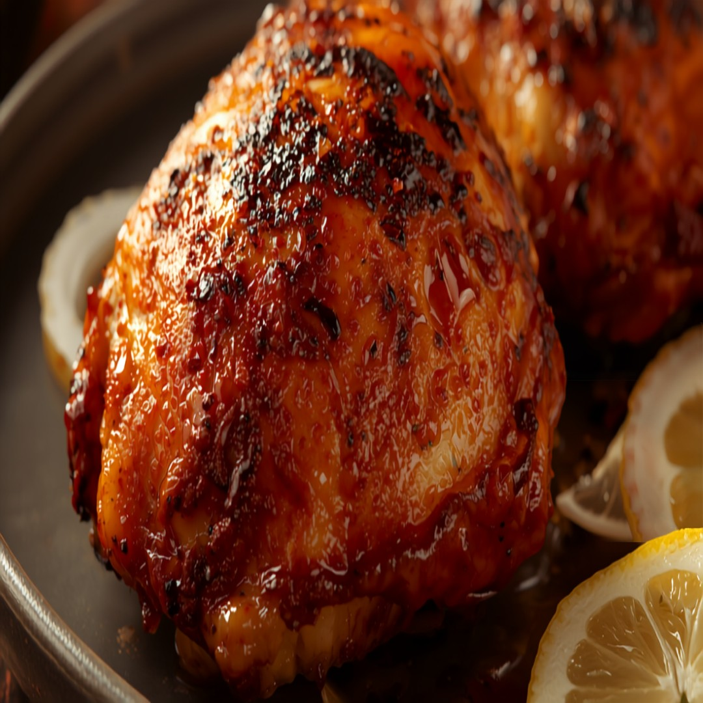

Isang tunay na yogurt-at-sangkap na minarinang manok mula Hilagang India, in-oven sa halip na inihaw sa uling at may mas kaunting mantika -- tunay na lasa ng tandoori, likas na mababa sa carbs.
Impormasyon sa Nutrisyon (bawat serving)
260
Calories
4g
Carbs
32g
Protein
12g
Fat
0g
Fiber
~0
GI Est.
Bakit Ito Bagay sa Diyetang Diabetic-Friendly
Sa 4g na carbs kada serving, kasya ito nang komportable sa karamihan ng low-carb na meal plan para sa diabetes, at ang tinatayang glycemic index nitong ~0 ay nangangahulugang mabagal ma-digest ang carbs nito sa halip na biglang magpataas ng asukal sa dugo, at ang 32g na protein kada serving ay tumutulong din na pabagalin ang digestion at pakinisin ang anumang pagtaas pagkatapos kumain.
Mga Sangkap
- 1 1/2 lb680 g hita ng manok
- 1/2 cup120 ml plain na yogurt
- 2 tbsp30 ml katas ng lemon
- 3 whole3 whole bawang
- 1 tbsp15 ml luya
- 1 tsp5 ml pulang giniling na sili
- 1/4 tsp1 ml luyang dilaw
- 1 tsp5 ml garam masala
- 1/4 tsp1 ml asin
- 1 tbsp15 ml mantika
Nasa App Na
Nasa GlucoBeacon app na ang recipe na ito — idagdag agad sa iyong Shopping List at daily carb tracker sa isang tap, libre.
Nasa app din — libre
- 🍽️ Restaurant Advisor — 3,700+ menu items mula sa 53 chains
- 📷 AI Food Camera — i-point, i-scan, malaman agad ang carbs
- 🩺 A1C Estimator — mula sa mga naka-log na reading mo
Paraan ng Paggawa
- Batihin ang yogurt, katas ng lemon, bawang, luya, pulang giniling na sili, luyang dilaw, garam masala, asin, at mantika para gawin ang marinade.
- Hiwaan ng bahagya ang hita ng manok at balutin nang mabuti sa marinade. I-refrigerate nang hindi bababa sa 30 minuto, o hanggang magdamag.
- I-preheat ang oven sa 425°F (220°C).
- Ilagay ang manok sa baking sheet at i-roast ng 25-30 minuto, baliktarin nang isang beses, hanggang mag-char sa gilid at maluto nang husto.
- Ihain nang mainit na may hiwa ng lemon.